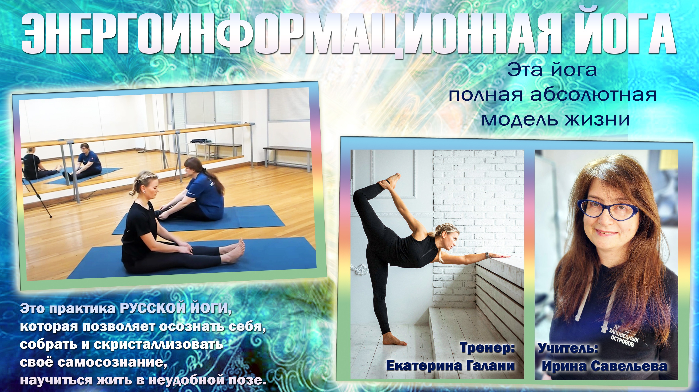
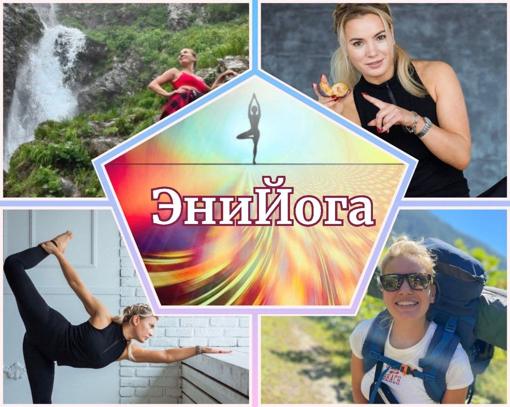

Энийога — энергоинформационная, или русская йога
Мы учимся жить в неудобной позе! Решать проблемы, менять сознание!

Академия Сферического Сознания в лице своих основателей и ведущих педагогов разработали систему восстановления внутреннего потенциала человека, используя как основу некоторые позы классической йоги Шри Б. К. С. Айенгара. Сам Айенгар называл свою практику хатха-йогой – «наукой воли».
Изначально практиковавший активную йогу, Айенгар впоследствии открыл преимущества статичной практики для людей с различными ограничениями здоровья. Статичное выполнение асан воздействует не только на мышцы, суставы и связки, но и на внутренние системы организма, на эмоциональное состояние и ум.
Развивая свою методику, Айенгар использовал пропсы – вспомогательные материалы (валики, блоки, одеяла, ремни и веревки, коврики, стулья) – для корректного положения тела в позе.
В основе метода – взаимодействие ума и физического опыта: мозг воспринимает воображаемое как реальное. Поэтому мы работаем не только с физическим телом, а с тремя уровнями человека:
Все, что происходит с человеком, фактически есть результат степени его триединства.
Энийога – метод, бесконечно развивающийся, без физических пределов сложности. Это «русская йога», позволяющая осознать себя, собрать и кристаллизовать свое самосознание, научиться жить в неудобной позе. Это полная абсолютная модель жизни.
Мы приглашаем Вас в эту волшебную практику!

Регулярные онлайн-занятия в группе Энерго-Информационной Йоги в Telegram. Подходит людям с разным уровнем подготовки и ограничениями здоровья – практика статичная.
Стоимость одного занятия – меньше стоимости чашечки кофе.
Екатерина Галани – тренер по энерго-информационной йоге и развитию физических качеств, Чемпионка России, Мастер спорта по восточным единоборствам.
@katyagalani